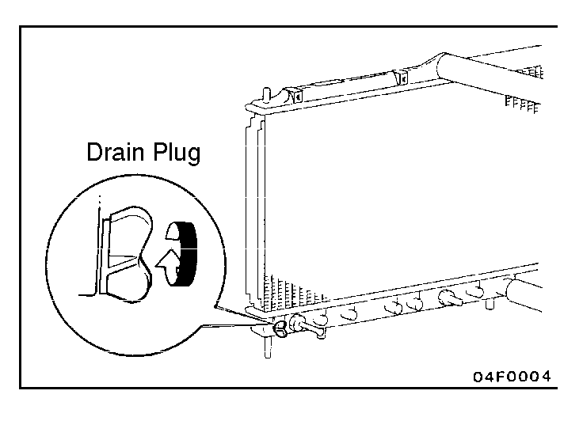
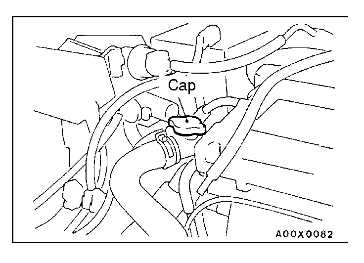
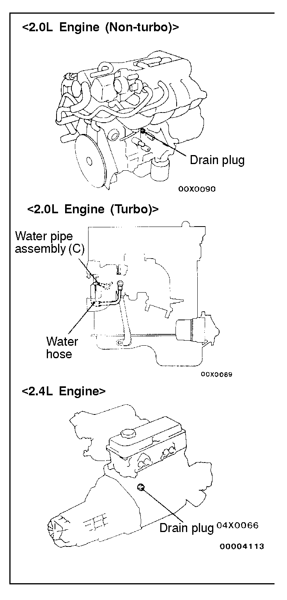

![[Previous]](https://mitsubishitechinfo.com/data/F24S/BUTTONS/fprevg.png)
![[Next]](https://mitsubishitechinfo.com/data/F24S/BUTTONS/fnextg.png)
  
14.ENGINE COOLANT (Change)
Check the cooling system parts, such as the radiator, heater, and oil cooler hoses, thermostat and connections for leakage and damage.
CHANGING COOLANT
1.Drain the engine coolant by removing the drain plug and then the cap.
2.For non-turbo, remove the drain plug from the cylinder block to drain engine coolant.
For turbo, remove the water hose from the water pipe assembly (C) to do so.
3.Remove the reserve tank to drain the engine coolant.
4.When the engine coolant has drained, pour in water from the cap to clean the engine coolant line.
5.For non-turbo, install the drain plug to the cylinder block. For turbo, install the water hose to the water pipe assembly (C).
6.Securely tighten the radiator drain plug.
7.Install the reserve tank.
8.Slowly pour the engine coolant into the mouth of the radiator until the radiator is full, and pour also into the reserve tank up to the FULL line.
Recommended antifreeze:
DIA-QUEEN LONG-LIFE COOLANT (Part No. 0103044) or high quality ethylene-glycol antifreeze coolant)
Quantity 7.0 dm3 (7.4 qts.)
9.Install the cap securely.
10.Start the engine and warm the engine until the thermostat opens. (Touch the radiator hose with your hand to check that warm water is flowing.)
11.After the thermostat opens, race the engine at 3,000 r/min 3 times.
12.After the engine is stopped, wait until the engine has cooled down, and then remove the cap to check the level of the liquid. If the level is low, repeat the operation from step 9.
Lastly, if the level does not drop, fill the condense tank with coolant up to the FULL line.